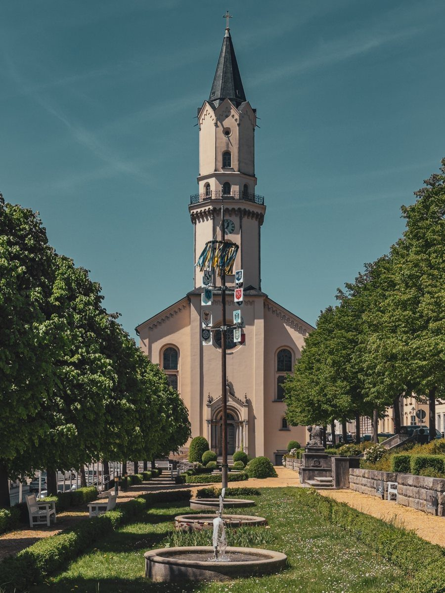

Das Buch
Die Dynastie der Geigenbaufamilie Ficker
Stadtkirche Markneukirchen
Die Frage
Viele Instrumente der Fickers tragen weder einen Zettel noch einen Brandstempel. Lassen sie sich trotzdem einem bestimmten Meister der Familie zuordnen? Dieser Frage geht das Buch nach.
Daneben erzählt es die Geschichte der Familie, ihrer Werkstätten und ihrer Instrumente in Markneukirchen.
Markneukirchen
Die Geigenbauer, die sich im 17. Jahrhundert in Markneukirchen niederließen, kamen als protestantische Exulanten aus Böhmen. In ihrer Heimat sollten sie zum katholischen Glauben übertreten. Sie blieben ihrem Glauben treu, nahmen ihr Werkzeug und ihr Wissen mit und flohen über die Grenze ins Vogtland.
Als Vorbild galt über Generationen der Tiroler Geigenbauer Jakob Stainer (ca. 1617–1683). Am 6. März 1677 wurde die Gründung der Geigenmacher-Innung zu Markneukirchen offiziell bestätigt. Die Urkunde nennt zwölf Meister, die aus Graslitz gekommen waren.
Nach Bernhard Zöbisch, Vogtländischer Geigenbau bis 1850.
Ein Rätsel am Anfang
Am Anfang der Familie steht eine rätselhafte Figur: Johann Christian Ficker I. Über ihn ist nur wenig bekannt. Ein großer Teil der schriftlichen Überlieferung Markneukirchens, darunter zahlreiche Kirchenbücher, ging 1840 bei einem Stadtbrand verloren. Als Meister der Geigenmacher-Innung taucht er nicht auf.
Seine Instrumentenzettel weisen ihn um 1700 als Geigenmacher aus. Ob er der Stammvater der Familie ist, ist nicht belegt.
Nach Bernhard Zöbisch, Vogtländischer Geigenbau bis 1850.
Wie ich arbeite
Grundlage sind Instrumente, deren Herkunft gesichert ist: durch einen Zettel, einen Brandstempel oder eine belegte Provenienz. Ich sammle Fotos und Maße, vergleiche die Instrumente miteinander und werte historische Quellen aus.
Wo eine Zuordnung nur wahrscheinlich und nicht bewiesen ist, sage ich das auch so.
Aufbau des Buchs
- Die Wiege des vogtländischen Geigenbaus
- Das wirtschaftliche und soziale Netzwerk der Geigenbaudynastien
- Johann Christian Ficker I
- Die Caspar-Linie (Linie I)
- Die Heinrich-Linie (Linie II)
Arbeitsstand. Änderungen sind möglich.
Stand
Das Buch entsteht gerade und erscheint zuerst auf Deutsch. Einen Erscheinungstermin gibt es noch nicht.
Für Museen, Sammlungen, Geigenbau und Handel
Ein Ficker-Instrument im Bestand?
Sie betreuen eine Sammlung, arbeiten als Geigenbauer oder Händler oder bieten ein Instrument der Familie Ficker zum Verkauf an? Dann freue ich mich über eine Nachricht. Jedes gesicherte Instrument hilft, das Bild der Familie zu vervollständigen.
Nachricht schreiben →Dank
Ein Projekt dieser Tragweite lässt sich nicht ohne die Hilfe und Expertise anderer verwirklichen. Mein besonderer Dank gilt dabei Frauke Uebel-Derigs. Mit ihr verbindet mich nicht nur eine inspirierende Zusammenarbeit, sondern auch eine herzliche Freundschaft. Ihr handwerkliches Können und ihre besondere Sicht auf den Geigenbau haben diese Arbeit wesentlich beeinflusst und geprägt.
An meiner Seite wusste ich stets meinen Ehemann, Fabian Alexander Rutschmann. Er ist seit Jahren mein persönlicher „Stimmstock“ – stabil, tragend und unverzichtbar. Ohne seine Geduld und seine Begeisterung für mein Tun wäre dieses Projekt nicht möglich gewesen.
Ein entscheidender Wendepunkt war die Begegnung in der Werkstatt von Ekkehard Köhler, der mir den ersten Zugang zu einer Ficker-Geige ermöglichte. Über diesen fachlichen Impuls hinaus schätze ich ihn heute als erfahrenen Meistergeigenbauer und guten Bekannten, dessen Expertise und Rat ich in unseren Fachgesprächen sehr bewundere.
Besonderer Dank gebührt Eckart Seidl für seine tiefe Expertise im Bereich vogtländischer Geigen sowie Dr. Simon Götz (Conrad Götz). Mit Simon verbindet mich seit Jahren eine wunderbare Zusammenarbeit und eine enge Freundschaft. Er hat mir nicht nur die Bedeutung des Standorts Markneukirchen nähergebracht, sondern auch den wertvollen Kontakt zum dortigen Musikinstrumenten-Museum Markneukirchen vermittelt.
Die wissenschaftliche und gutachterliche Begleitung durch Hieronymus Köstler war für die Bestimmung der Instrumente von unschätzbarem Wert. Für den weiteren fachlichen Austausch und den Zugang zu wichtigen Referenzobjekten danke ich zudem dem Geigenbauatelier Ulm, Perrin & Associates Fine Violins (Baltimore) sowie dem Auktionshaus Tarisio (New York). Ebenso gilt mein Dank dem Musikinstrumenten-Museum Berlin für die freundliche Unterstützung während meiner Recherchen.
Abseits der fachlichen Analyse danke ich von Herzen meinen Freunden Michael Hatting und Miguel Antonio Somcio Davao. Unsere stetigen Gespräche sind ein wertvoller Teil dieses Buches geworden.
Diese Dokumentation ist auch euer Verdienst. Danke für das Vertrauen, die Unterstützung und die vielen Impulse.